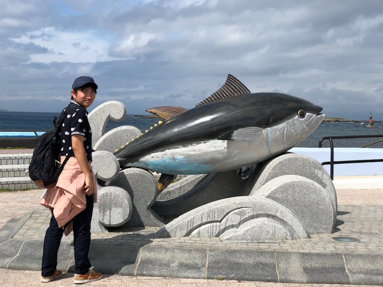

MIZUKI
OYAMA
Portfolio
2023
About Me
おやま みずき
MIZUKI OYAMA
1991年生まれ。札幌市在住。
大学で水産学を学び、海藻の機能性成分について研究する。卒業後、食品の受託試験機関に入社、名古屋と大阪にて食品の成分分析業務に従事。
2021年に退職後、自分のスキルのニッチさに不安を感じ、2023年より職業訓練校にてWeb制作を学ぶ。趣味はカラオケと散歩。
できること
Skill
※GIMPやClip Studioを用いた画像編集も可能です。
Works
可読性・メンテナンス性などに配慮した、シンプルなコーディングをするように心がけています。
Contact
各種SNSのDM機能もしくはメールフォームより承っております。
原則として３営業日以内に返信いたします。５営業日経って返信がない場合、大変恐れ入りますが再度ご連絡ください。